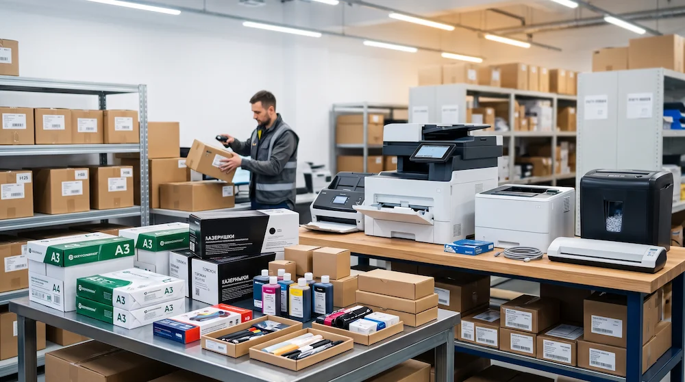
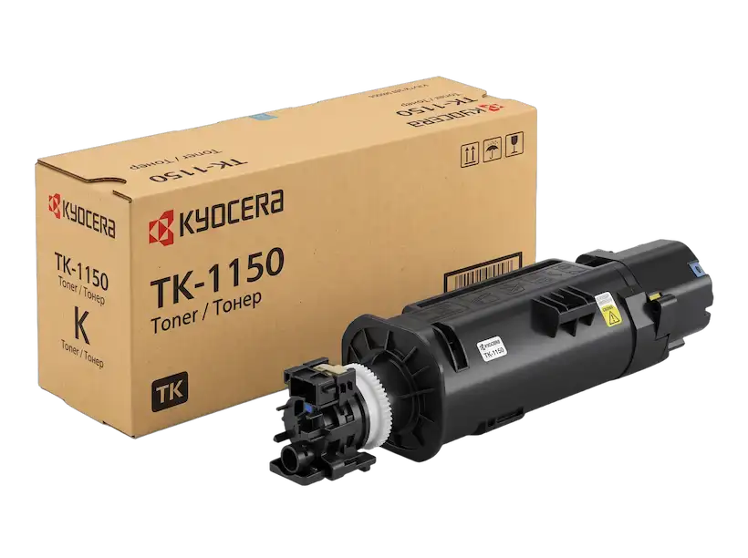
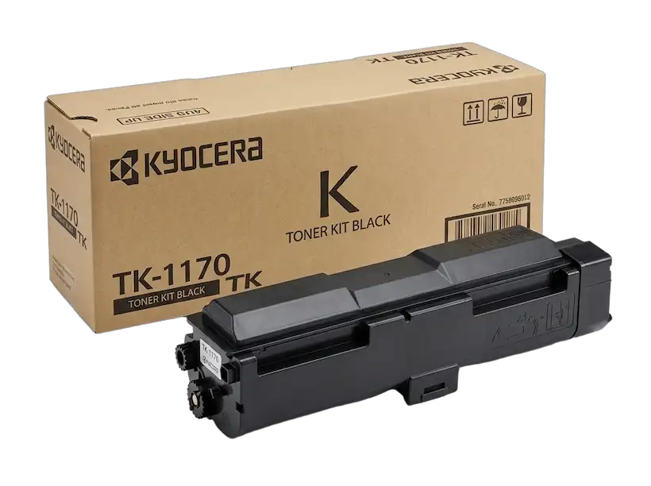
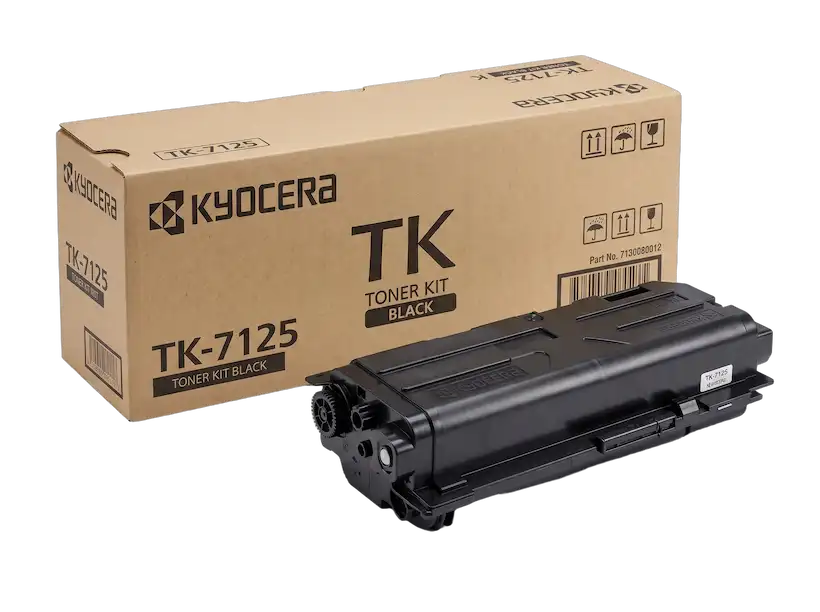

Подбор под ваши задачи
Спросим, сколько страниц вы печатаете в месяц, какой нужен размер бумаги, нужна ли двусторонняя печать и подключение по сети. Предложим 2-3 варианта: недорогой, средний и для большой нагрузки.
Принтеры и сканеры Kyocera, HP, а также широкоформатные принтеры, оригинальные картриджи и тонеры. Подберём технику под ваш объём печати, привезём, настроим и оформим документы.

Найдем технику под ваши объёмы, бумагу и требования к качеству, чтобы картриджей хватало, а работа не останавливалась.
Спросим, сколько страниц вы печатаете в месяц, какой нужен размер бумаги, нужна ли двусторонняя печать и подключение по сети. Предложим 2-3 варианта: недорогой, средний и для большой нагрузки.
Картриджи, тонеры и запчасти только оригинальные, с голограммами и серийными номерами.
Привезём, установим, подключим к сети и компьютерам, научим сотрудников пользоваться. Дадим гарантию и при необходимости обслужим с выездом специалиста.
Примеры - подберём любой аппарат и расходник по модели. По кнопке «Заказать» позиция попадёт в заявку на главной.

KYOCERA · МФУ ЧЁРНО-БЕЛОЕ

KYOCERA · МФУ ЧЁРНО-БЕЛОЕ

HP · ПРИНТЕР ЧЁРНО-БЕЛЫЙ

KYOCERA · ОРИГИНАЛЬНЫЙ КАРТРИДЖ

KYOCERA · ОРИГИНАЛЬНЫЙ КАРТРИДЖ

KYOCERA · ОРИГИНАЛЬНЫЙ КАРТРИДЖ
Коротко о главном перед заявкой. Подробный расчёт расходов на печать пришлём вместе с коммерческим предложением..
| Формат и нагрузка | A4 подходит для обычных офисных документов, A3 для чертежей, таблиц и больших документов. Широкоформатные принтеры (плоттеры) печатают на форматах до A0. Ориентир по нагрузке: до 5000 страниц в месяц - настольное устройство, до 20 000 - напольное МФУ. |
|---|---|
| Функции | Печать, копирование, сканирование и факс. Двусторонняя печать, автоподача оригиналов на 50-300 листов, сшивание готовых документов. Защищённая печать по ПИН-коду, отправка сканов на почту, в сетевую папку или в облако. |
| Расходные материалы | Картриджи, тонер или барабан. Назовите модель аппарата, и мы подберём точный номер расходника, например TK-1170 или CF237X. |
| Сеть и безопасность | Подключение по кабелю и Wi-Fi, печать с телефонов и планшетов. Вход по учётной записи сотрудника, шифрование данных на диске, учёт печати по сотрудникам и отделам. |
| Сканеры | Протяжные сканеры на 40-120 страниц в минуту, планшетные и сетевые. Для архива нужно разрешение 600 dpi и распознавание текста, для большого потока документов - лоток на 60-100 листов. |
Пришлите объём печати и формат - через час вернём комерческое предложение с ценой аппарата и стоимостью отпечатка.